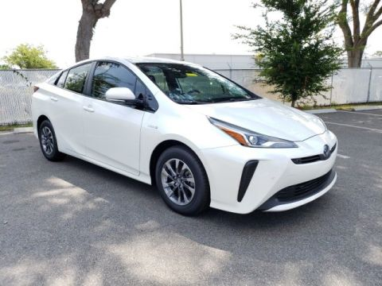
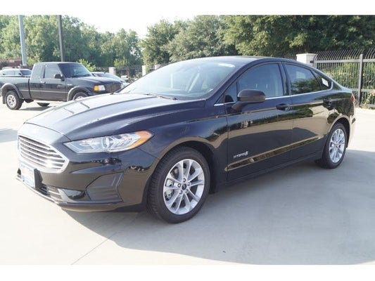

HEVs, as explained previously, are vehicles that have an Internal Combustion
Engine that is coupled with an Electric Motor used to assist in propelling
the vehicle. HEVs have the smallest battery pack of all EVs. The battery is
charged while driving using the engine, or while stopping or while going down
a hill where the energy is captured via the wheels. The usual battery size
in these vehicles are under 5 kWh. EVs battery sizes are rated by kWh and the
and the larger the battery pack, the more range you will have.
HEVs are designed to help assist the ICE in propelling the vehicle. No external
charging is possible. These types of vehicles are usually the cheapest entry
point for a person to get into the EV world and are ideal for people that want
the best fuel economy possible without sacrificing the need to have to charge their
vehicle.
Most major manufactures produce some sort of hybrid vehicle. The most commonly
known vehicle in this class is the Toyota Prius. Here's a short list of the
most common vehicles in this class: Toyota Prius, Honda Insight, Honda Accord
Toyota Camry, Nissan Altima and Toyota Highlander.
There are many more, and a list of others are available
HERE.

To get the most out of a hybrid, you’ll also have to consider your driving style.
Hybrids may boast much higher fuel economy figures on the window sticker, but they
aren’t accurate if you’re constantly flooring the car at every stoplight. That’s
because a hybrid’s ability to save fuel depends on the balance of internal-combustion
and electric power, and that varies based on the design of the powertrain, and
driving conditions. Because of this, hybrids tend to be ideal in stop-and-go city
driving conditions, but not for highway cruising.
Finally, it’s important to note that not all hybrids are created equal.
The “hybrid” label is an umbrella term that just identifies a vehicle as being
propelled by two types of power supply, most typically, by a gasoline engine and
electric motor.
A hybrid car can be a great way to save money on gas, provided you pick the right
one and have a good idea of how it will be used before you buy. With so many hybrids
on the market, and with more coming in the next few years, there is certainly no
shortage of options.